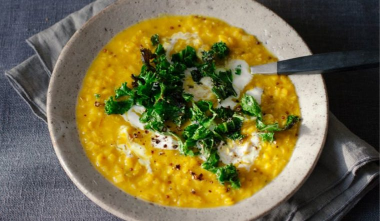

Lentil and kale soup

Description
A recipe by Anna Jones, this is sort of a cross between a dhal and a soup. It is light but flavourful and is pretty quick and easy too.
Ingredients
- a splash of olive or rapeseed oil
- 1 leek, washed, trimmed and finely sliced
- 1 teaspoon ground turmeric
- 2 teaspoons ground cumin
- 2 teaspoons black mustard seeds
- juice of 2-3 lemons
- 250g split red lentils
- 1 veg stock cube, or 1 tablespoon veg stock powder
- 4 handfuls of kale (or other greens), washed, trimmed and shredded
- yoghurt (to serve - optional)
Instructions
- Get a large pan on the heat. Add a little oil and turn the heat to medium.
- Add the leek and fry for a few minutes, until it has softened and smells sweet.
- Add the spices and fry for another couple of minutes.
- Squeeze in the juice of 1 lemon and stir around to lift all the spices from the bottom of the pan.
- Add the lentils, 1.5 litres of water and the stock cube or powder and allow to bubble away for 20-35 minutes, until the lentils are cooked and the soup has thickened.
- Turn off the heat and, if you like, you can blitz the whole lot to a thin dhal consistency, then squeeze in the juice of the remaining 2 lemons, tasting as you go to make sure it doesn't get too lemony. It may seem like a lot, but you really want the lemony tang to come through.
- Just before you're ready to serve, saute the kale in a little olive oil until it slightly softens but begins to crisp at the edges.
- Ladle into bowls and top with the salted yoghurt and the crispy kale.
Return to home